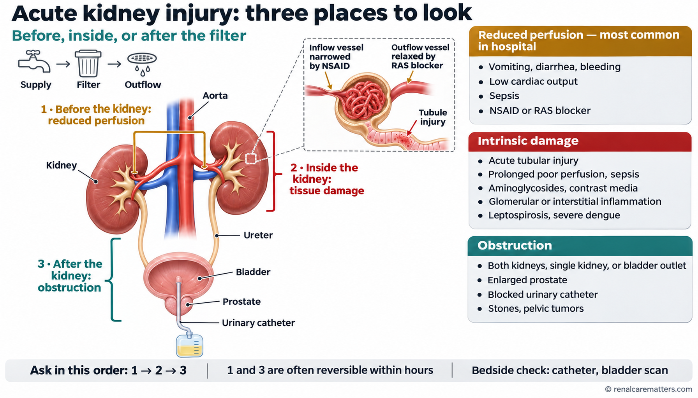
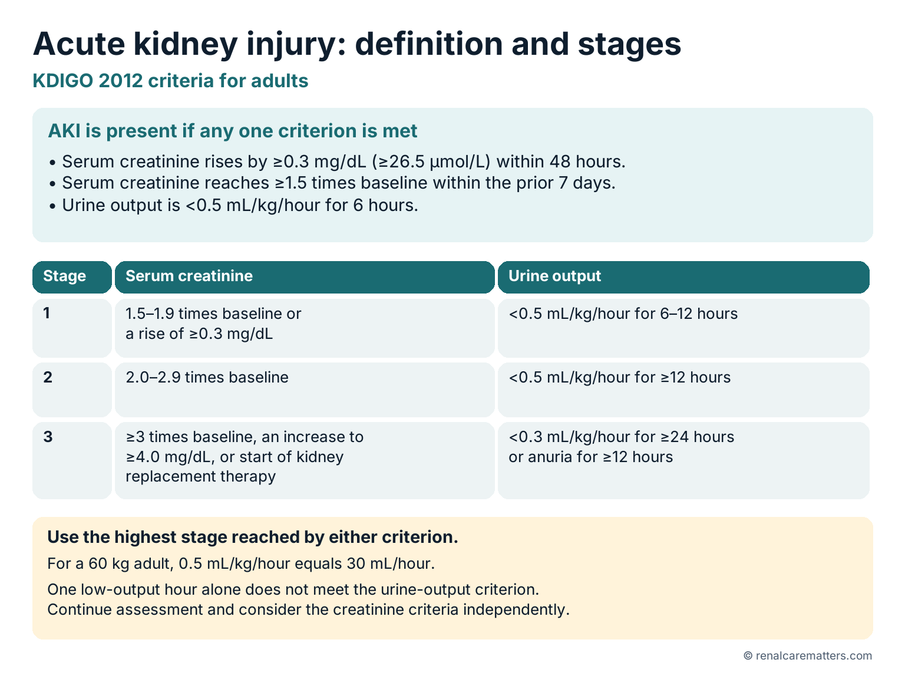
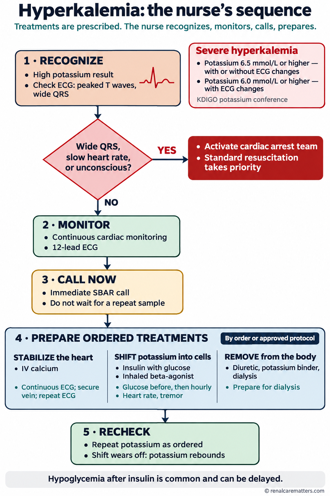
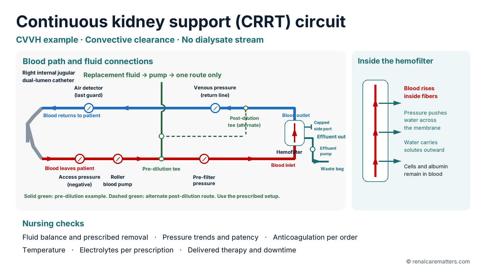

After this module you should be able to
- Apply the creatinine and urine-output criteria that define acute kidney injury.
- Sort likely causes into reduced kidney perfusion, intrinsic kidney damage, and obstruction, using bedside findings.
- Monitor a patient at risk and recognize the findings that require urgent escalation.
- Deliver a concise clinical handoff for a time-critical problem such as hyperkalemia with electrocardiogram changes.
- Compare intermittent, prolonged intermittent, and continuous kidney support.
- Stage acute kidney injury and identify patients at risk before injury occurs.
- List the indications for urgent kidney support.
- Describe the nursing care of a patient receiving acute hemodialysis or continuous therapy.
- Plan follow-up after an episode of acute kidney injury.
Before, inside, or after the filter
If a household tap slows to a trickle, there are only three places to look: the supply into the house, the filter itself, or a blockage in the outflow pipe. Acute kidney injury (AKI) is sorted the same way. Either too little blood is reaching the kidneys, or the kidney tissue is damaged, or urine cannot drain. The question is worth asking in that order at every bedside, because the first and third are often reversible within hours if someone notices, and the nurse is usually the person positioned to notice.
Criteria and the three categories of cause
The Kidney Disease: Improving Global Outcomes (KDIGO) 2012 guideline defines AKI by any one of the following: a rise in serum creatinine of 0.3 mg/dL (26.5 µmol/L) or more within 48 hours; a rise to 1.5 times baseline or more, known or presumed to have occurred within the prior 7 days; or a urine volume below 0.5 mL/kg per hour for 6 hours.1 Severity is staged 1 to 3 by the size of the creatinine rise or the duration of low urine output. The absolute numbers are small on purpose: creatinine lags behind the true fall in filtration, so a change from 0.9 to 1.3 mg/dL can represent a substantial loss of function. A KDIGO update that broadens the framework to acute kidney disease (AKD) and adds biomarkers was released as a public-review draft in 2026; until the final version is published, the 2012 criteria remain the reference.12
Reduced perfusion is the most common category in hospitalized patients. Volume loss from vomiting, diarrhea, or bleeding, low cardiac output, and sepsis all reduce the pressure that drives filtration. Medicines can remove the kidney’s defenses: a nonsteroidal anti-inflammatory drug (NSAID) narrows the vessel entering the glomerulus, and a renin–angiotensin blocker relaxes the vessel leaving it. Intrinsic damage includes acute tubular injury from prolonged poor perfusion, sepsis, or toxins such as aminoglycosides and contrast media, as well as inflammation of the glomeruli or the interstitium. In the Philippines, leptospirosis and severe dengue are important infectious causes. Obstruction has to affect both kidneys, a single functioning kidney, or the bladder outlet to cause AKI; an enlarged prostate, a blocked urinary catheter, stones, and pelvic tumors are typical.

Staging, and who is at risk
| Stage | Serum creatinine | Urine output |
|---|---|---|
| 1 | 1.5 to 1.9 times baseline, or a rise of 0.3 mg/dL or more | Below 0.5 mL/kg per hour for 6 to 12 hours |
| 2 | 2.0 to 2.9 times baseline | Below 0.5 mL/kg per hour for 12 hours or more |
| 3 | 3.0 times baseline or more, or 4.0 mg/dL or higher, or start of kidney replacement | Below 0.3 mL/kg per hour for 24 hours or more, or no urine for 12 hours |
The patient is placed in the highest stage reached by either criterion.1 Each higher stage is associated with higher mortality and a greater chance of lasting kidney damage, which is why even stage 1 is reported.
Calculating urine output. For a 60 kg adult, 0.5 mL/kg per hour is 30 mL per hour, or 180 mL over 6 hours. Use the patient's weight, total the output over the period, and divide; a single low hour after a catheter change is not acute kidney injury (AKI), but six in a row is.
Who is at risk. AKI is far easier to prevent than to treat, and prevention starts with knowing who is vulnerable.
| Susceptibility (the patient) | Exposure (the event) |
|---|---|
| Chronic kidney disease (CKD) | Sepsis |
| Age over 65 | Major surgery, especially cardiac and vascular |
| Diabetes, heart failure, liver disease | Volume loss: vomiting, diarrhea, bleeding, burns |
| Dehydration or poor oral intake | Low blood pressure or shock |
| Medicines that impair kidney defenses | Kidney-toxic medicines and contrast media |
| Previous AKI | Urinary obstruction; muscle breakdown; envenomation |
For a patient with several susceptibilities who meets an exposure, the nursing bundle is simple: measure urine output and weight daily, keep an accurate fluid balance, make sure kidney function is checked, question every kidney-toxic medicine, and report early.1

What cannot wait
No medicine has been shown to reverse established AKI. Management is supportive: restore perfusion, stop or adjust harmful medicines, relieve obstruction, and prevent the complications that kill, chiefly hyperkalemia, pulmonary edema, and severe acidosis.1 Kidney support is started for these complications when they do not respond to medical treatment; trials of starting dialysis earlier, before such complications, have not shown a survival benefit.2
Hyperkalemia is the complication with the shortest fuse. Potassium sets the resting electrical state of heart muscle, and a high level can progress from peaked T waves to a widened QRS complex and cardiac arrest with little warning. A KDIGO conference on potassium graded acute hyperkalemia by both the level and the electrocardiogram (ECG): a potassium of 6.5 mmol/L or higher is severe whether or not the ECG has changed, and a level of 6.0 mmol/L or higher with ECG changes is also severe.3 Emergency treatment follows a fixed logic: intravenous calcium to stabilize the heart, insulin with glucose and inhaled beta-agonist to shift potassium into cells, and then removal from the body, by dialysis if the kidneys cannot do it.3 In cardiac arrest from suspected hyperkalemia, standard resuscitation takes priority and the resuscitation guideline assigns these drugs a more limited role.4 These are prescribed treatments; the nurse’s time-critical tasks are recognition, continuous cardiac monitoring, an immediate call, and having the treatments ready.
Structured handoff formats such as Situation, Background, Assessment, Recommendation (SBAR) are associated with improved communication and patient safety in a systematic review, although the evidence is of moderate quality.5 In an emergency their value is practical: the listener hears the problem and the request in the first sentence.

Supportive care: what helps and what does not
Fluids. If the patient is depleted, restoring volume restores perfusion; if not, extra fluid cannot be excreted and accumulates in the lungs and tissues. Fluid overload in AKI is associated with higher mortality in observational studies, so fluids are prescribed against an assessed need and reassessed, not continued by default. The guideline suggests isotonic crystalloids rather than colloids (albumin or starches) for initial volume expansion when there is no hemorrhagic shock.1 The nurse's contribution is the reassessment: weight, cumulative balance, breathing, and edema, reported before the next bag is hung.
Diuretics do not prevent or shorten AKI and are recommended only to manage fluid overload; low-dose dopamine does not protect the kidney and is not recommended.1 A good urine output after furosemide shows that some tubules still respond; it does not show that the kidney has recovered.
Finding the cause uses a small set of tests: urinalysis and microscopy (granular "muddy brown" casts suggest tubular injury; red-cell casts suggest glomerular inflammation), a kidney ultrasound to exclude obstruction, and review of the medication chart and the hemodynamic record. A bedside bladder scan takes a minute and can end the search.
When kidney support is started urgently. The accepted indications are complications that threaten life and have not responded to medical treatment:
- Potassium that remains dangerously high or with electrocardiogram (ECG) changes
- Fluid overload with pulmonary edema that does not respond to diuretics
- Severe metabolic acidosis
- Uremic complications: pericarditis, encephalopathy, or bleeding
- Certain poisonings and drug overdoses that dialysis can remove
In the absence of these, a large randomized trial found no survival advantage from starting earlier and more dependence on dialysis among survivors, so the decision is made on the trajectory and the whole clinical picture.62
The emergency treatment of hyperkalemia, for orientation. Doses and sequence are prescribed; the table explains what each step does and what the nurse monitors.3
| Step | Effect | Nursing monitoring |
|---|---|---|
| Intravenous calcium | Stabilizes heart muscle within minutes; lasts 30 to 60 minutes; does not lower potassium | Continuous ECG; secure, patent vein, since calcium damages tissue if it leaks; repeat ECG after the dose |
| Insulin with glucose | Moves potassium into cells within 15 to 30 minutes; lasts a few hours | Blood glucose before, then hourly for several hours; hypoglycemia is common and can be delayed |
| Inhaled beta-agonist | Moves potassium into cells; adds to insulin | Heart rate and tremor |
| Sodium bicarbonate | Useful mainly when acidosis is present | Sodium and fluid load |
| Removal: diuretic if urine is being made, potassium binder, dialysis | The only steps that take potassium out of the body | Repeat potassium as ordered; prepare for dialysis |
Because the first three steps wear off, potassium rebounds unless removal follows. A repeat potassium after temporizing treatment is part of the plan, not an optional extra.
Monitoring, and the forms of kidney support
For a patient at risk, record hourly urine output when a catheter is in place, daily weight, strict intake and output, and vital signs with attention to the trend. When urine output falls, check the simple things first: is the catheter kinked or blocked, and is the bladder palpable or distended on a bladder scan? Review the medication chart for agents that harm the kidney or accumulate when it fails, and ask whether doses need adjustment. Report a creatinine rise that meets the criteria even if the patient looks well.
When kidney support is needed, three forms are used. The choice depends mainly on how stable the circulation is and on what the hospital can provide.
| Intermittent hemodialysis | Prolonged intermittent therapy | Continuous therapy | |
|---|---|---|---|
| Typical duration | 3 to 5 hours | 6 to 12 hours | 24 hours a day |
| Solute and fluid removal | Fast | Moderate | Slow and steady |
| Best suited to | Stable circulation; rapid potassium removal | Borderline circulation; limited continuous-therapy resources | Unstable circulation, vasopressor support, brain swelling risk |
| Nursing demands | Dialysis nurse at bedside for the session | Dialysis nurse for a longer session | Hourly fluid balance, circuit and anticoagulation monitoring around the clock |
The slow form is called continuous renal replacement therapy (CRRT), and the middle form is prolonged intermittent renal replacement therapy (PIRRT). Randomized comparisons have not shown that any one form improves survival over the others; the slower forms are chosen because they are better tolerated when blood pressure is fragile.12
Nursing care during acute hemodialysis and continuous therapy
Access. Acute treatment uses a temporary, non-tunneled dialysis catheter. The guideline's order of preference for the site is the right internal jugular vein, then a femoral vein, then the left internal jugular; the subclavian vein is avoided because narrowing there can ruin future fistula options in that arm.1 The catheter is used for dialysis only, handled with full aseptic technique (Module 7), and checked each shift for redness, discharge, bleeding, and position. Femoral catheters limit hip flexion; kinking shows as pressure alarms when the patient sits up.
Continuous renal replacement therapy (CRRT) at the bedside.
| What to watch | Why |
|---|---|
| Hourly fluid balance against the prescribed net removal | Small hourly errors compound over 24 hours into liters |
| Circuit pressures and their trend | A rising pressure across the filter warns of clotting hours before the circuit stops; a sudden access-pressure alarm suggests a kinked or malpositioned catheter |
| Anticoagulation | With heparin, bleeding and clotting tests as ordered. With regional citrate, the patient's ionized calcium is monitored closely, because citrate binds calcium; tingling, spasm, a low blood pressure, or a prolonged QT interval is reported at once |
| Temperature | Blood cools in the circuit; continuous therapy can cause hypothermia and can also hide a fever |
| Electrolytes | Continuous clearance removes potassium, phosphate, and magnesium; low levels are common after the first day and need replacement |
| Medicines and nutrition | Many antibiotics are removed and need dose adjustment; amino acids and water-soluble vitamins are lost |
| Downtime | Time off the circuit for scans, clotting, or bag changes reduces the delivered dose; record it |
Acute intermittent hemodialysis in an unstable patient uses the measures described in Module 9 for preventing hypotension, with closer intervals: slower blood flow at the start, cooler dialysate, a modest fluid goal, and blood pressure every 15 minutes or as ordered. For a first treatment in a patient with very high urea, the session is deliberately short and gentle to avoid dialysis disequilibrium (Module 9).

Recovery, discharge, and the Philippine picture
The recovery phase. As tubules heal, urine output may rise to several liters a day before concentrating ability returns. The risks reverse: dehydration, low potassium, and low sodium replace overload and high potassium. Daily weights and electrolyte checks continue, and fluid replacement is adjusted to output.
After discharge. A person who has had AKI is at higher risk of CKD, of another episode, and of cardiovascular events. The guideline advises reassessing kidney function about 3 months after the episode to see whether it has resolved, become CKD, or worsened pre-existing CKD.1 The discharge nurse can make that happen by ensuring four things are in the discharge plan: the diagnosis "acute kidney injury" written in words the patient has been told; a date for a repeat creatinine and urine albumin test; a reconciled medication list stating which medicines were stopped and whether and when each is to be restarted; and advice to tell any future prescriber and to seek care early during dehydrating illness.
Infectious causes seen in the Philippines. Leptospirosis follows exposure to floodwater or soil contaminated by animal urine and typically presents with fever, muscle pain especially in the calves, red eyes, and jaundice; its kidney injury often comes with a normal or high urine output and a low potassium, and severe cases can bleed into the lungs. Severe dengue causes kidney injury through shock, muscle breakdown, and bleeding. In both, early recognition, careful fluid balance, and early referral to a center that can provide kidney support change the outcome. Ask every patient with fever and a rising creatinine about wading, rodents, farming, and recent typhoons.
Case: A catheter, a creatinine, and a potassium
Mr. Benjamin, 74, is two days post hip surgery in the intensive care unit (ICU). His creatinine was 0.9 mg/dL before surgery and is 1.3 mg/dL this morning, 36 hours later. Urine output through his catheter has been 15 mL per hour for the last four hours, and his lower abdomen is firm and tender. He has received an NSAID for pain since surgery. A repeat blood test returns a potassium of 6.7 mmol/L, and the monitor now shows tall, peaked T waves.
Before reading on, decide what you would assess, what you would communicate and to whom, what you would teach, and what would make you escalate. Then compare with the outline below.
Assess
Communicate
Teach
Escalate
Check your understanding
Each visit draws 5 questions at random from this module’s 15-question bank, in a shuffled order. Choose the single best answer for each, then select Check answers; a rationale appears under every option. Reload the page or select New set of questions for a different mix. Nothing you select is sent anywhere; scoring happens in your browser.
With your preceptor
With your preceptor in a ward or critical care area, follow one patient with or at risk of AKI through a shift. These are prompts for supervised learning, not a procedure. Your preceptor observes and signs off each item on the unit’s own competency form; the educator page has a printable version.
- Calculates urine output in mL/kg per hour and compares with the AKI criteria.
- Checks catheter patency and bladder status when output falls.
- Reviews the medication chart for kidney-relevant agents and raises queries appropriately.
- Delivers an SBAR handoff for a simulated hyperkalemia scenario within one minute.
Read next on this site
- Acute Kidney Injury on Top of Chronic Kidney DiseaseAKI in a patient who already has CKD.
- Dialysis Decisions in Intensive CareHow decisions about starting kidney support in the ICU are made.
- Continuous Renal Replacement Therapy: A Clinical ReferenceClinician reference for continuous therapy.
- Potassium and HyperkalemiaHyperkalemia: causes, ECG changes, and treatment.
- Fever and Kidney Injury in the TropicsLeptospirosis, dengue, and other tropical causes of AKI.
- KDIGO AKI/AKD guideline page (2012 guideline and 2026 draft status)Primary source (external site).